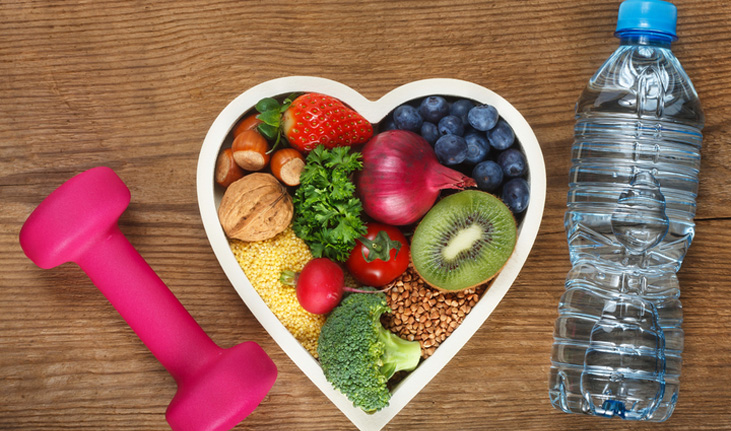
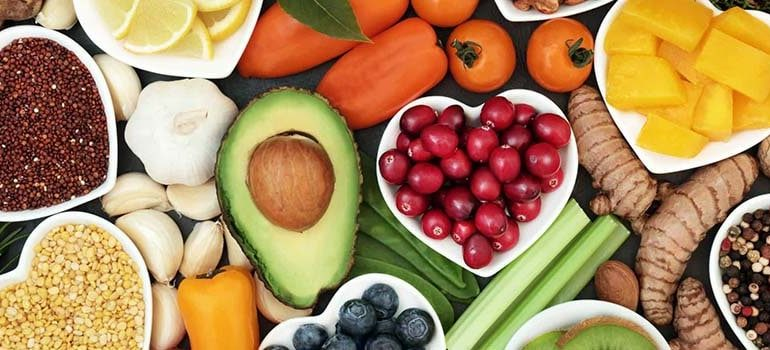

Sobre o Site
Bem-vindo ao meu site sobre a importancia de uma vida saudável.Uma vida saudável é seguramente o maior desejo de todos nós. Afinal, sem saúde a vida não tem o mesmo significado. O melhor caminho para se sentir feliz, enérgico e saudável no futuro é levar uma vida feliz, enérgica e saudável no presente. .
Aqui vai ter dicas para uma vida saudavel
o intuito desse site:promover o bem-estar físico, mental e emocional.
etapas para sair do sedentarismo
1. Defina metas realistas
Comece definindo metas específicas, mensuráveis e alcançáveis para sua atividade física.
2. Consulte um médico
Antes de iniciar qualquer programa de exerxicios, é importante consultar um médico, espececialmente se você tem problemas de saúde pré-existentes.
3. Comece devagar
Não se apresse.Inicie com atividades leves, como caminhadas curtas, e vá aumentando gradualmente a intensidade e duração.
4. Encontre algo que goste
Escolha atividades que você realmente goste,seja dança,natação,ciclismo,esportes ou exercícios em grupo.
5. Estabeleça uma rotina
Criar uma rotina consistente é fundamental para superar o sedentarismo.Defina horários específicos para suas atividades físicas e siga-os regularmente.Isso ajuda o exercício uma parte natural de sua vida cotidiana.
6. Procure apoio
Envolva amigos,familiares ou grupos de exercício para manter-se motivado.
7. Varie os tipos de exercício
Misture diferentes tipos de atividades para evitar o tédio e trabalhar diversos grupos musculares.
8. Aumente a intensidade
Á medida que se sentir mais confortável, aumente gradualmente a intensidade dos exercícios.
9. Monitore seu progresso
Registre seus treinos e acompanhe seu desenvolvimento ao longo do tempo.
10. Cuide da recuperação
Dê ao seu corpo tempo para se recuperar após o exercício, incluindo descanso e recuperação adequada.

alimentação saudável
motivos para ter uma boa alimentação.
Você sabe qual é a importância de uma alimentação saudável para ajudar a manter o seu organismo equilibrado, nutrido, protegido e funcionando como deve? Acredite: alimentar-se de forma adequada é de extrema importância para que as suas funções vitais funcionem como devem.
O corpo humano precisa diariamente de vitaminas, nutrientes e minerais para ser “abastecido”. E esses compostos são adquiridos por meio da alimentação..
Um cardápio equilibrado traz diversos benefícios para o organismo, tanto para o aspecto físico, quanto para o mental. Além de ter mais disposição e energia, uma pessoa que entende a importância de uma alimentação saudável e segue essas orientações para o seu dia a dia é menos suscetível a ter algumas doenças, como: obesidade, câncer, artrite, anemia, diabetes e hipertensão. Afinal, essas condições acontecem muitas vezes como consequências de uma alimentação inadequada. .
Vale lembrar que seguir uma vida mais equilibrada e uma alimentação mais saudável é algo que envolve a mudança de hábitos diversos, disciplina e persistência. E um dos primeiros passos para quem está em busca dessa vida saudável está relacionado com fazer boas escolhas alimentares. .
Como ter uma alimentação saudável?
Engana-se quem pensa que a alimentação saudável é restritiva. Isso porque a verdadeira chave para um bom cardápio é a variedade de alimentos. Nutricionistas indicam que quanto mais cor tiver o seu prato, mais benefícios e nutrientes você oferece para o melhor funcionamento do seu organismo.
Ademais, é sempre importante ressaltar que cada organismo é diferente. Por isso, a melhor maneira de ter uma alimentação saudável é fazer um bom acompanhamento nutricional. Assim, o profissional poderá indicar boas opções de refeições para você fazer no seu dia a dia para alcançar o resultado desejado e, também, fortalecer a sua saúde.
benefícios de uma alimentação saudável
Além de fazer bem ao organismo e ajudar a manter-se em forma, uma alimentação saudável age na em nossa mente, nos deixando com um melhor humor, mais dispostos e concentrados.
Um corpo bem nutrido sofrerá menos com as consequências de uma alimentação inadequada e, ainda, promoverá um bem-estar muito maior para enfrentar a rotina.
Quer saber mais sobre importância de uma alimentação saudável, então confira os tópicos baixo.
Diminuição e manutenção do peso
Talvez um dos benefícios mais conhecidos da alimentação saudável seja esse. A reeducação alimentar não é sinônimo de dietas drásticas e restritivas, e sim de equilíbrio e saúde.
Aumento da disposição
Sabe aquele ditado popular “saco vazio não para em pé”? Ele é a mais pura verdade. Comer adequadamente traz disposição ao organismo e à mente para enfrentar as tarefas do dia a dia.
Melhora do humor
Sabe aquela história de que mau humor é fome? Existem alguns alimentos que podem ajudar a prevenir essa situação.
O espinafre, por exemplo, possui vitamina B e ácido fólico, dois nutrientes atuantes no sistema nervoso e que ajudam a combater o estresse.
Além disso, é importante apostar em alimentos que são fonte de serotonina – hormônio da alegria, – como a banana e o chocolate, para ajudar a afastar o mau humor.
Prevenção de doenças
A alimentação saudável é extremamente importante para prevenir doenças variadas. Vegetais variados, como brócolis e espinafre, fortalecem o sistema imunológico. A cenoura e a cebola são ricas em antioxidantes, que ajudam a retardar o envelhecimento precoce das células. E esses são só alguns exemplos!
Dicas para uma alimentação saudável
- Agora que você já sabe a importância e os benefícios de uma alimentação saudável, vamos dar algumas dicas fáceis para ajudar na sua transição de hábitos:
Uma alimentação saudável e equilibrada pode fazer toda a diferença na sua vida! Se você está em busca de melhorar cada vez mais os seus hábitos, saiba que o site da Gabi está ao seu lado!